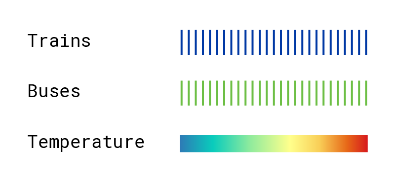

A Year of
MTA Transit
How did weather affect ridership for trains and buses in 2023?
This infographic shows the MTA’s daily public transportation ridership as the percentage change from average (calculated for both weekdays and weekends). Explore how weather impacts ridership using the filters below.
Filters
Reset

Hover over a bar in the chart to display info for that day